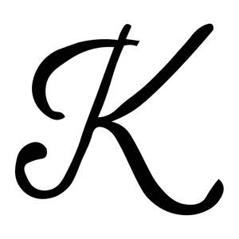

Trade Mark Journal No.2025/048 28 November 2025
UK00004296859 18 November 2025 (25)

- Class 25
- Clothing; maxi dresses; tops; mini dresses; adjustable dresses; adjustable bodysuit; midi dresses; backless dresses; evening wear; dresses for evening; cocktail dresses; daytime dresses; halter dresses; pinafores; pleated dresses; pleated skirts; body-con dresses; sculpt dresses; shape-wear dresses; slim dresses; tight dresses; long-sleeve dresses; sheer dresses; sheer tops; long sleeve tops; short-sleeve dresses; short-sleeve tops; jumper dresses; holiday dresses; poloneck; turtle neck; polo shirt; racer tops; sculpt tops; shirts for evening; shirts; shirts for trousers; shirts for evening; shirt dresses; vests; cotton vests; cotton t-shirts; bridal; bridesmaid dresses; wedding gowns; office wear; resort-wear; swim cover ups; bikini; swimsuit; beach dress; beachwear; swimwear; knitwear; knit dresses; knit tops; coats; trousers; straight trousers; crepe trousers; low waist trousers; high waist trousers; wide-leg trousers; drawstring trousers; casual trousers; formal trousers; formal wear; formal dresses; formal dresses; shorts; skirts; maxi skirts; mini skirts; backless dresses; womenswear; menswear; mens tops; mens joggers; chino pants; vests; women's vests; mens vests; mens t-shirts; mens jackets; suit jackets; blazer; jumpers; hoodies; jogging bottoms; jackets; coats; cotton coats; fur coats; wool coats; lapel coats; waterproof jackets; waterproof trousers; denim; denim jeans; denim coats; denim skirts; denim jackets; denim skirts; denim shorts; denim hats; denim tops; denim dresses trench coats; puffer coats; footwear; heels; sandals; mule heels; stiletto heels; boots; platform shoes; trainers; rain boots; ladies boots; mens boots; nightwear; dressing gowns; robes; lingerie; bras; bralettes; knickers; thongs; pants; pyjamas; satin robe; cotton robe; button up pyjamas; night dresses; shape-wear; underwear; men's boxers; men's pyjamas; socks; men's ties; hats; bucket hats; caps; headgear; fascinators; wooly hats; activewear; yoga pants; tennis shirts; tennis dresses; running clothing; activewear bras; activewear skirts; tennis skirts; ski gear; ski coats; ski trousers; ski jackets; sportswear; scarves; headscarves; silk scarves; satin scarves; knit scarves; knit scarves; head scarves; belts; jumpers; pullover jumpers; zip up jumpers; button up jumpers; leather trousers; leather belts; imitation leather belts; leather dresses; imitation leather dresses; satin trousers; children's clothing; children's dress; children's trousers; children's shirts; children's occasion wear; children's footwear; children's wedding wear; children's headwear; children's hats.
KWEZI LIMITED